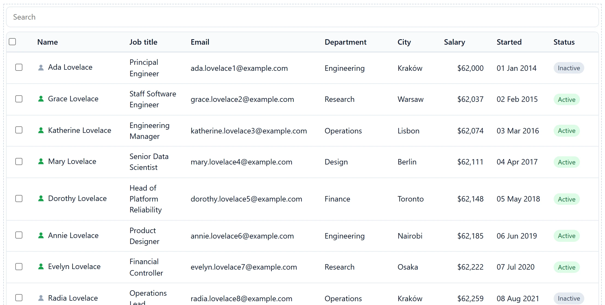

One pipeline, any source
A data source declares what it already resolved: sort, filter, search, paging. The pipeline applies the rest. Nothing above it knows whether rows are local or remote.
React data grid · MIT · v{{VERSION}}
Hand it an array today and a paginating API tomorrow. The columns, the add-ons and every prop but one stay exactly as they were.
npm install apsw-gridwright
A data source declares what it already resolved: sort, filter, search, paging. The pipeline applies the rest. Nothing above it knows whether rows are local or remote.
When a server sends no count, the grid says "of many" instead of inventing a number from one page that you would then act on.
A real <table>, a real sort button, aria-sort, a live region for row changes. An opt-in wcag() add-on brings the visual side to WCAG 2.2 AA.
Search, filters, export, tree, grouping, inline editing, column layout, row detail, URL sync. The built-ins have no access a third-party add-on lacks.
A windowed source and row virtualization keep the DOM small. A failing stage or plugin loses only its own effect.
No DOM and no React in the core, so the whole pipeline is testable without a renderer. Typed end to end, with an optional MUI package.
Swap the array for a server without touching anything else.
import { Gridwright, columnFilters, exportMenu, search } from 'apsw-gridwright/react';
import 'apsw-gridwright/styles.css';
<Gridwright
columns={[{ id: 'name', header: 'Name' }, { id: 'salary', header: 'Salary', align: 'end' }]}
data={people} // or dataSource={createRestDataSource({ url: '/api/people' })}
addons={[search(), columnFilters(), exportMenu({ formats: ['csv', 'excel', 'print'] })]}
/>One page per part of the grid. The pages are generated from the markdown in the repository.
The grid stays MIT and free, and nothing that is free today becomes paid. Pro is for teams who want add-ons built on top of it, and someone to call.
Free
Not priced yet
Sponsors keep an MIT grid maintained. Company logos will appear here once there are sponsors; there are none to show yet.
Become a sponsor